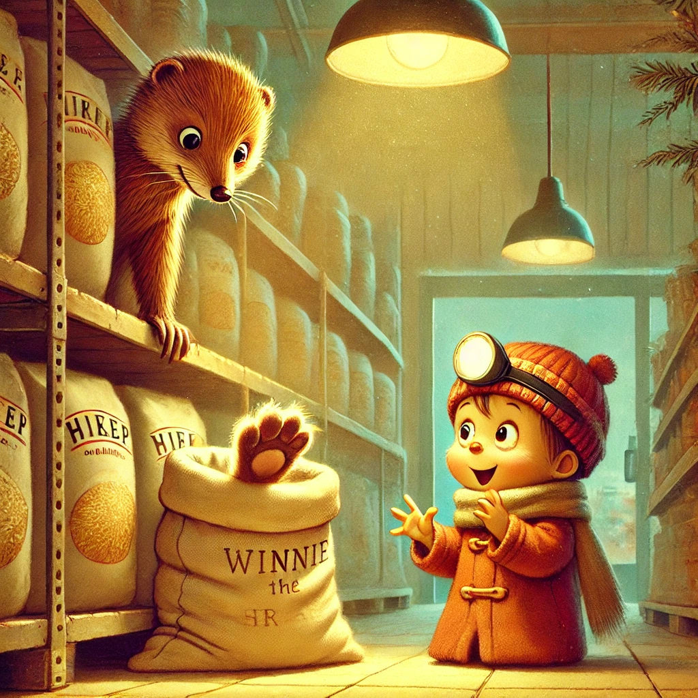
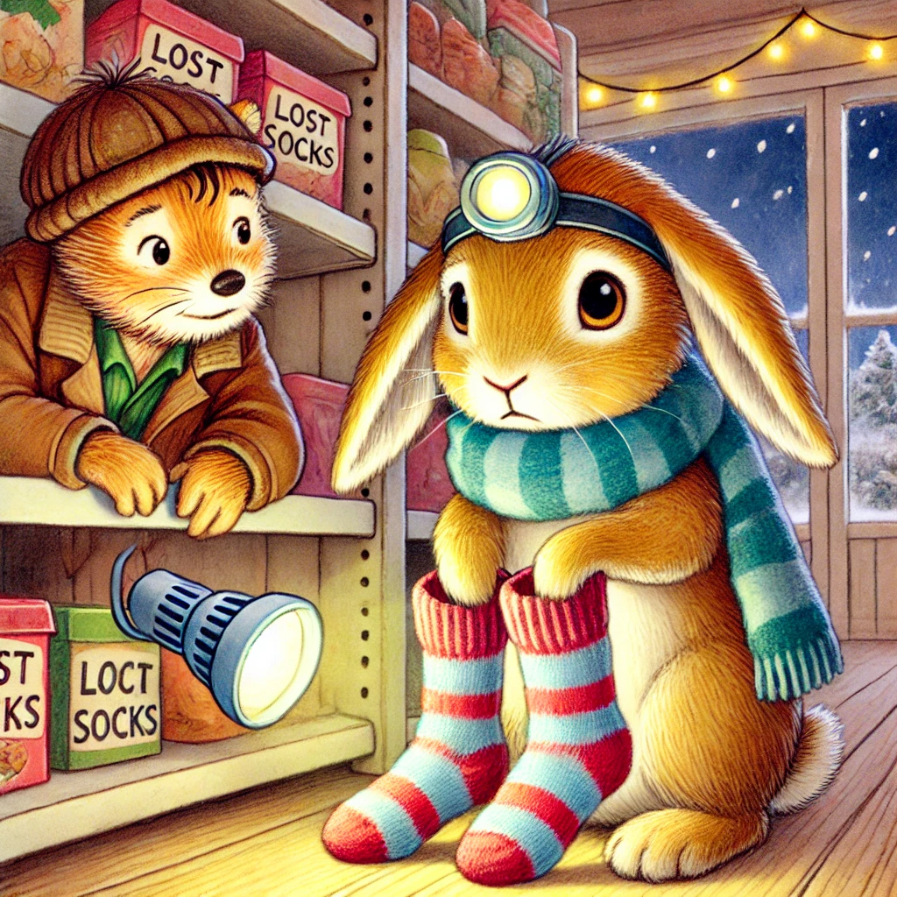
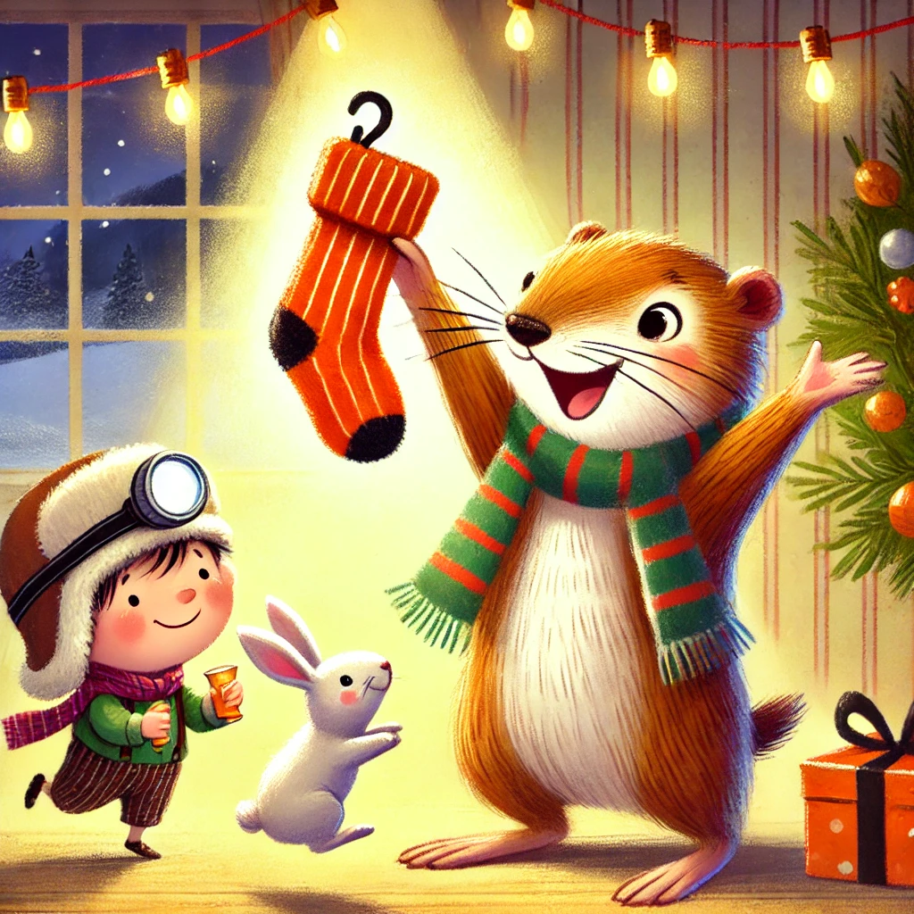

Es war einmal ein Wiesel namens Winnie, das oben auf dem Knabbereienregal eines Supermarkts in Leknes auf den Lofoten wohnte. Eines Tages - Winnie und Biep waren gerade dabei Abendessen einzusammeln (Nudeln mit Käse ind Ketchup) - hörten sie ein leises Fiepen.
Als sie bei dem Weizenprodukten um die Ecke bogen, sahen sie einen haarigen kleinen Fuß zwischen Bulgur ins Couscous aus dem Regal hängen. Langsam kamen sie näher und sahen einander ratlos an. "Ein Fuß kann nicht fiepen", sagte Winnie weise. "Da fiept nicht der Fuß, sondern das, was dran hängt", flüsterte Biep. "Was hängt wohl dran, was meinst du?" Winnie hoppelte langsam und vorsichtig näher.
"Vielleicht ein Elefant", staunte Biep voller Hoffnung. "Aber Biep, Elefanten haben doch kein Fell" entgegnete Winnie. Ganz langsam schoben sich die beiden näher an den Fuß heran. Winnie stupste ihn mit ihrer Nase an. Der Fuß zuckte zurück und verschwand im Regal. Einen Moment später erschien eine kleine Nase ängstlich zitternd, wo eben noch der Fuß gewesen war. "Ehm... Hallo... Ich...", flüsterte es unentschlossen. "Winnie, ich glaube, das ist ein Hase! Schau, wie die Barthaare wackeln. Hey, Häschen, warum bist du denn traurig?"
Langsam schob sich die Nase weiter aus dem Regal, bis ein ganzer Kopf zum Vorschein kam. Biep hatte Recht: zwei große Ohren legten sich nach hinten und der Hase schaute sie aus großen Augen an. "Ich... Traurig... Ich... Hab meine Socken verloren... Kalt. So kalt." Winnie wiederholte: "Du frierst, weil du deine Socken verloren hast?" Ein schüchternes Nicken war die Antwort. Motiviert und heldenhaft riefen Winnie und Biep im Chor: "Wir finden sie!" Und los ging die Suchaktion: sie flizten kreuz und queer durch die Regale und es flogen nicht wenige Artikel durch die Luft.
"Hiiiier" schrillte es plötzlich durch den Supermarkt. Winnie hielt stolz ein winziges paar Socken in die Luft. Der kleine Hase hoppelte mit großen Augen zu ihr. Dankbar nahm er sie an sich und eine dankbare Träne rollte seine Wangen hinunter. "Kommt schon, Winnie und Herr Hase, wir machen uns eine heiße Schokolade" schloss Biep das Abenteuer ab.